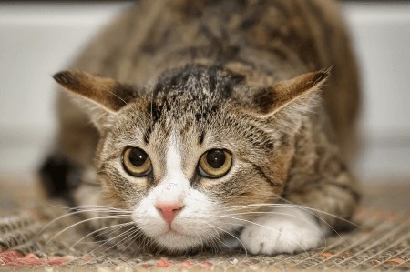

Quarantine's effect on pets: Quirky behaviors explained
Angela Zhang. 8/16/2020

A dog lays to the side as its owner types away at her laptop. (Fairfield Residential)
COVID-19 has changed all of our lives to some degree. For many of us, it plucked us from our day-to-day schedules and plunged us into quarantine, where we became prisoners to our own homes. We became stuck in the house, all day every day. With each passing moment, we found fewer and fewer things that would keep us entertained. Many of us began to feel miserable, lonely and heartbroken over losing connection with the outside world. Isolation left us no choice but to look inside at all the things about ourselves and our surroundings that we weren’t quite as attuned to before. And a big one of these re-examinations is our relationship with our pets.
Before all of the coronavirus regulations, many people left for their nine to five jobs without really stopping to think about what their pets experienced for the entire day at home. If you think about it, stay-at-home pets are pretty much always in a state of quarantine. They don’t leave the house unless it’s to go on walks, only interact with the people who live with them and spend most of their time in isolation. During quarantine, pet owners finally get a taste of what their pets have to go through on a normal basis. Except, for the pets themselves, their lives are now turned upside down by their owners.
Humans being around 24/7 is a sudden disruption to the pets’ daily routines. The day no longer belongs entirely to the pet anymore; now, life revolves around the owner’s schedule. Feeding times might change based on the owner’s desires; walks may become more frequent since people have so much free time and playtime might increase as will training time for tricks and commands. Due to this, many pets may lose their sense of security and predictability in the day’s events. With their owners’ desires spinning at them from every possible way, pets will feel like their control is disappearing from their actions. Alone time will start to dwindle, especially in a house where younger children are romping around all the time.
All of this will make pets start to feel stressed out, which will manifest in changes in behavior. Just as humans have their coping mechanisms for stress such as playing with hair, pacing around, or chewing on fingernails, animals will show signs of anxiety too. These tics are known as displacement behaviors, and some common forms that exist in dogs and cats are overgrooming, mounting, pacing, vocalizing, scratching or spinning. Birds might begin vocalizing or speaking more, engaging in defensive postures, or responding frantically to human contact.

A wide-eyed cat crouches close to the carpet. (HolidayCat)
A wide-eyed cat crouches close to the carpet. (HolidayCat)
Not only can animals get stressed out by vast changes to their daily routines, but they will also feel uneasy in response to their owners’ distress. Animals can experience “emotional contagion”, which is when they will internalize some of the troubling signals that their owners are giving off. According to Fabricio Carballo, an animal cognition researcher at the University of El Salvador, dogs will experience higher levels of anxiety if their owners are worked up. A study in the United Kingdom added further evidence that cats will also recognize if their owners are undergoing stressful times. Despite the fact that the animals themselves don’t know exactly why their people are spending so much time at home with them, they pick up on the worries that their owners might be having about their loved ones, their jobs, their well-being and the status of the world.
That is why it is so important that pet owners try to maintain structure and stability in their schedules so that pets don’t feel overwhelmed or on-edge. This can be done by keeping feeding times consistent and resisting the urge to shower your adorable pet with all the treats possible. Also, make sure that they have quiet and secluded places to retreat to if they need some time alone. If you’re constantly sending them a stream of hugs and kisses, their patience will run thin at some point. Going for walks on a scheduled basis, too, keeps the day somewhat predictable for them. It’s also important to know when it’s time to tone down the affection, even if cuddling your pet is extremely tempting. Even though you have all the free time right now, keep in mind that once the world returns to normal, it’ll be tough for your pet to get used to not receiving all that attention from you.
In preparation for when quarantine restrictions are lifted, take measures to ease your departure from your pet. Just as suddenly being at home every day comes as a shock for pets, it’s just as shocking when you disappear from their lives once again. The transition will be especially tough for pets with separation anxiety. 20 to 40 percent of dogs presented to veterinary behavioral specialists suffer from separation anxiety and will become distressed and often destructive when their owners leave them alone at home. Cats, too, can become too attached to their owners, and will showcase symptoms of emotional angst like excessive meowing or self-grooming.
Gradually increasing your time away, hiring a pet sitter, or often taking trips home to see your pet are all good methods of easing the return to regular day-to-day life. Or, for a clever approach, every time you leave the house, you can reward your pet with a tasty treat, so they’ll associate you leaving with positivity rather than desolation.
It’s important to remember that our beloved pets are not exempt from feeling the repercussions of this pandemic. Oftentimes, when keeping to our own busy schedules, we overlook how significant our presence is to them. Despite all of the things we’ve missed out on because of quarantine, spending much-needed quality time with our pet pals makes it worthwhile.
Cover Photo: (Ohio State University Wexner Medical Center)
Angela Zhang is a rising junior at Beckman High School. She is an aspiring storyteller who hopes to make a profound impression on her audience with her writing. She is also a passionate cactus enthusiast and has a soft spot for cheesy puns.